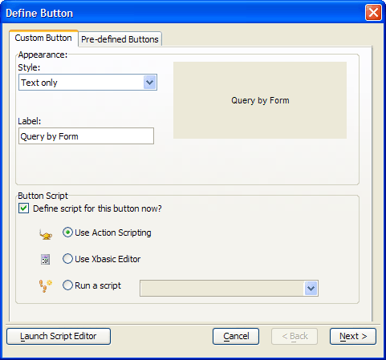
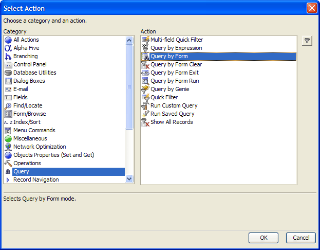
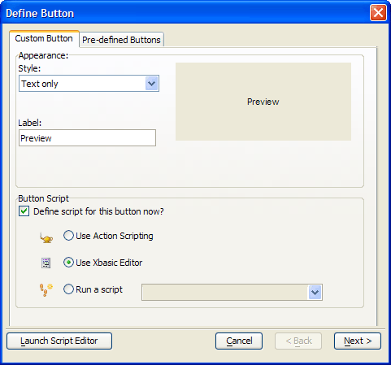

Creating Buttons that Run Code
Button1 , Button2 and Button3 demonstrate how to move an Alpha Five function onto a button on a form by attaching an Action Script or a developer created script:
|
Button |
Action Script |
Xbasic Equivalent |
|
Button1 |
|
script_play_local("cust_rep_queried") |
|
Button2 |
Query By Form |
topparent.Query_By_Form() |
|
Button3 |
Show All Records |
topparent.show_all() |
Procedure: Creating a Button with an Action Script
The following procedure assumes that the developer has opened the form in the Form Editor. Follow these instructions to create a button similar to Button3 :
Select the Button tool on the toolbar and sketch the new button.
Enter the label of the button in the Label type-in box.
In the resulting Define Button dialog box accept the default values for Define script for this button now? and Use Action Scripting.
Click the Next > button.

In the resulting Select Action dialog box select "Query" from the Category list and "Query by Form" from the Action list.
Click the OK button.

Click the Finish button in the Script Genie.
Click the Finish button in the Define Button dialog box.
The Action Script is automatically attached to the button's OnPush event.
Procedure: Creating and Attaching a Script to a Button
The following procedure assumes that the developer has opened the form in the Form Editor. Follow these instructions to create a button similar to Button1 :
Select the Button tool on the toolbar and sketch the new button.
Enter the label of the button in the Label type-in box.
In the resulting Define Button dialog box accept the default value for Define script for this button now?
Click the Launch Script Editor button.

Enter the following Xbasic code.
|
current_filter = current_filter_expn() current_order = current_order_expn() query.filter = current_filter query.order = current_order if (vcLayoutType = "reports") then report.preview(vcReports, query.filter, query.order) else if (vcLayoutType = "letters") then letter.preview(vcLetters, query.filter, query.order) else if (vcLayoutType = "labels") then label.preview(vclabels, query.filter, query.order) end if |
Click the Save button and the Close (X) button.
The script is automatically attached to the button's OnPush event.
You can further edit the script after opening it up from the Code tab of the Control Panel.
An Explanation of the Code
The Preview button on CustQueryReport form calls this Xbasic code. The purpose of this routine is to preview the appropriate type of layout, using the primary table's current filter and order expressions. The first step is to return the filter expression of the primary table. The variable current_filter is implicitly dimmed as C (character).
|
current_filter = current_filter_expn() |
Next the routine gets the order expression of the primary table. The variable current_order is implicitly dimmed as C (character).
|
current_order = current_order_expn() |
This statement sets the value of the query.filter variable, the second argument of the preview() method.
|
query.filter = current_filter |
This statement sets the value of the query.order variable, the third argument of the preview() method.
|
query.order = current_order |
The value of vcLayoutType variable, as set by the DROPDOWN1 list box, defines the first argument of the preview() method.
|
if (vcLayoutType = "reports") then report.preview(vcReports, query.filter, query.order) else if (vcLayoutType = "letters") then letter.preview(vcLetters, query.filter, query.order) else if (vcLayoutType = "labels") then label.preview(vclabels, query.filter, query.order) end if |
A more compact version of the same Xbasic routine would be:
|
if (vcLayoutType = "reports") then report.preview(vcReports, current_filter_expn(), current_order_expn()) else if (vcLayoutType = "letters") then letter.preview(vcLetters, current_filter_expn(), current_order_expn()) else if (vcLayoutType = "labels") then label.preview(vclabels, current_filter_expn(), current_order_expn()) end if |
See Also